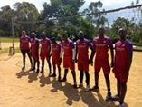
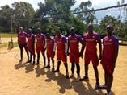

Your most welcome to this documentation where you will almost find all the interesting facts you
never knew about CYRUS "#M.K.C." As you read through, you will get exposed to different things but
all about CYRUS.
YOUR MOST WELCOME
I was born of a magnificient man from the "lugave" clan; thus am in that clan and of an adorable woman of the "mpeewo" clan; thus landed on planet earth.
i have my ancestral homes in Mityana district at a place called Bukuya... I know i come from far so dont remind me of that. Currently am living at Nansana "akaalo amatendo," just as one VJ always calls it, its quite a beautiful place with all that you eould need to make your life comfortable.
We are six people living under the same roof exclusive of all the other members of the extended family but inclusive of the basic members of the nuclear family. we are four boys and one girl born of the same parents.
In this sphere, i will award my dad all the credit for he has struggled all the way through to make sure that we all get quality education from first class schools. I for one i went to;
 

This is one sphere where i do believe that no one will ever exhaust him/herself. This is because its quite hard for one to know all that he/she likes. I for one, am always getting new cool things i like. to mention but a few, i love music most esp RnB, Pop e.t.c
I also do tabletennis, volleyball, basketball and swimming.
As i conclude, i thank you for giving me your time and attention to know more about me. In case of anything you can find me on all the following platforms.